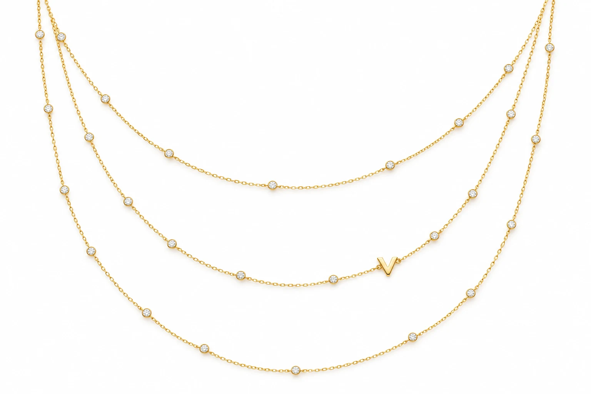
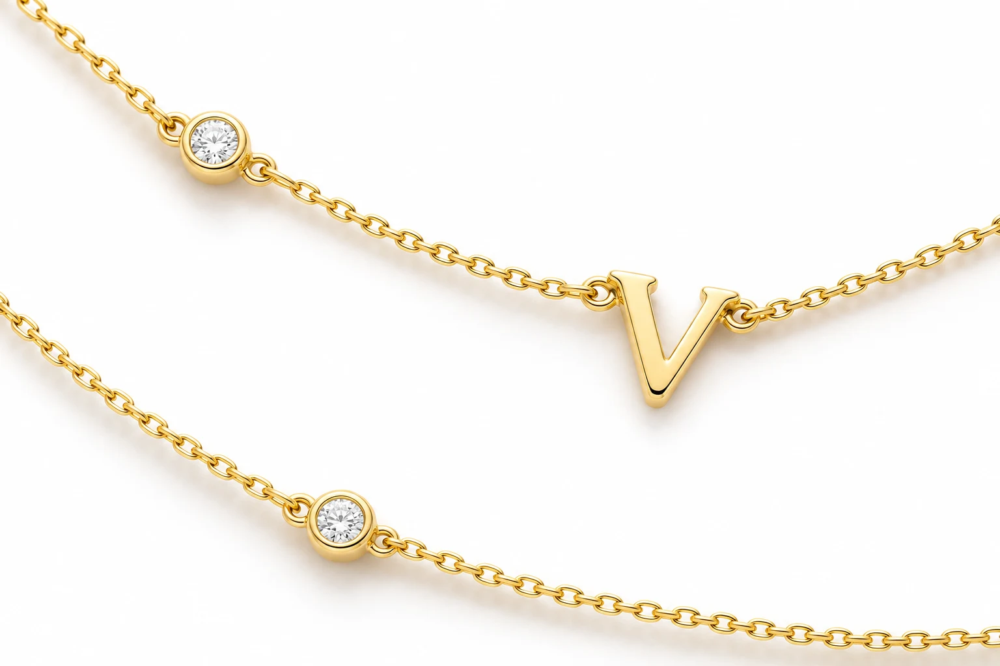
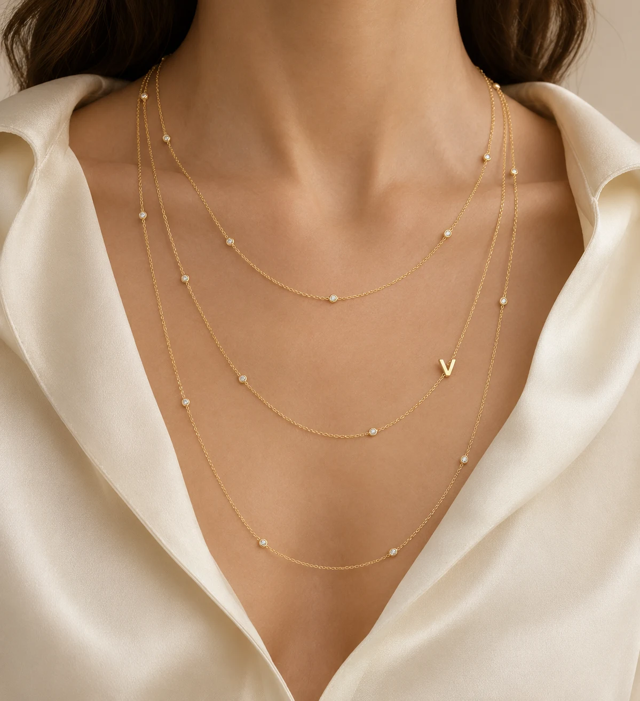
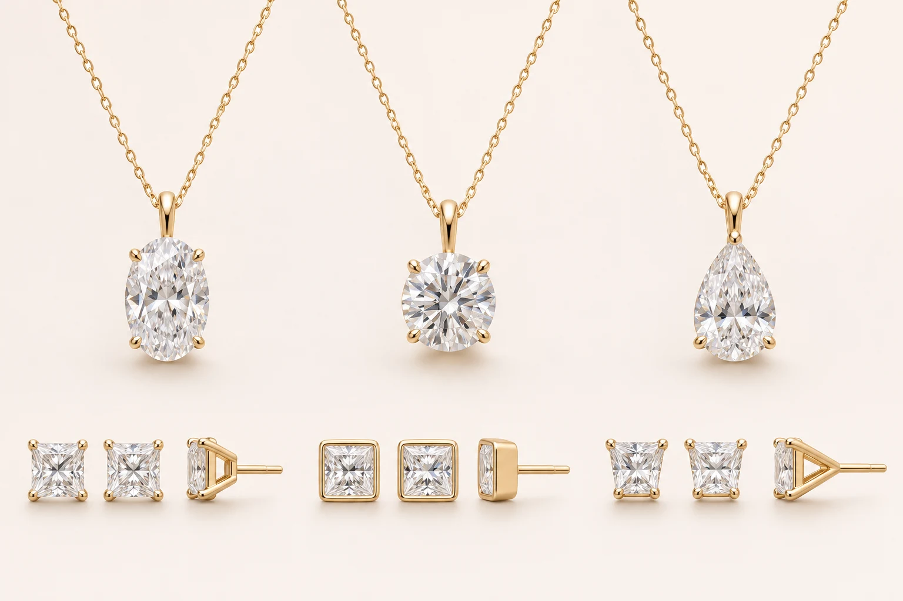

Aura design preview
Diamond Station Necklace
Round 0.20 ct diamonds are spaced at irregular intervals along a fine 18K yellow gold chain. A small polished initial, shown as V, sits just above the size of one diamond. Choose your letter when you enquire.
Choose your length
- 70 inches · estimated 24 stones · 4.80 ct total
- 36 inches · estimated 12 stones · 2.40 ct total
Enquire for a quote. Stone counts, spacing and the finished design are subject to atelier confirmation.
Enquire about this design


More designs to enquire about
Solitaire pendants and princess studs
Explore oval, round and pear solitaire pendants in 18K gold, with 1–5 ct diamond sizes and your choice of gold colour, subject to availability.
For princess-cut studs, ask about classic four-prong, bezel or tapered basket settings.
